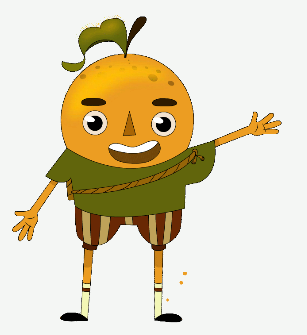

Construcciòn
El proyecto está construido utilizando tecnologías web,
específicamente mediante la plataforma WordPress y haciendo uso de
un flipbook implementado en HTML. La elección de WordPress sugiere una
apuesta por una solución robusta y de fácil gestión de contenidos. Por
otro lado, la implementación de un flipbook en HTML sugiere un enfoque
interactivo para la presentación de información, lo que podría aumentar
la participación y el compromiso de los usuarios.